Bestemming bij Nijmegen
Kranenburg
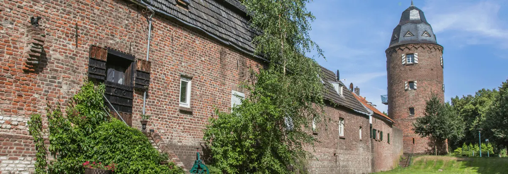
Tussen Nijmegen en Kleve
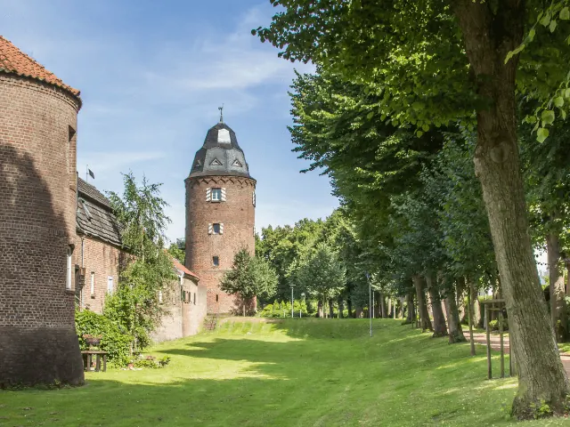
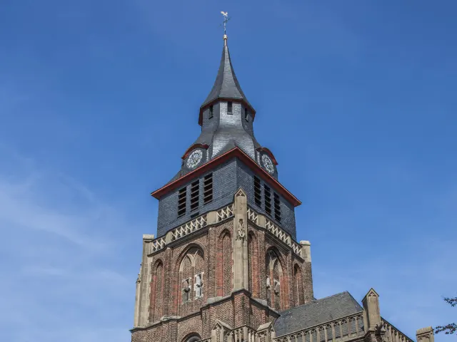
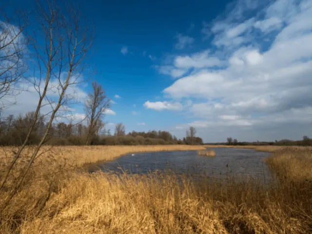
Kranenburg is een historisch stadje gelegen aan de Via Romana, tussen Nijmegen en Kleve. Net als in Nijmegen proef en zie je hier nog altijd de middeleeuwse sfeer. Kranenburg heeft een klein maar fijn historisch centrum. Je waant je hier langs de mooie wandel- en fietsroutes al snel in de Deutsche gemütlichkeit.

Geniet van de historie van Kranenburg
De geschiedenis van Kranenburg zie je onder andere terug in de oude stadswal uit 1400, waar je nog altijd de vier torens herkent, waarvan de Mühlenturm het best overeind gebleven is. Met dank aan museum het Katharinenhof zijn de bezienswaardigheden uit het verleden goed onderhouden en waar nodig gerestaureerd. Zo kan er in de gewelfde kelder van het Katharinenhof of in de Molentoren zelfs getrouwd worden.
Museum het Katharinenhof
Het Katharinenhof is tot ver buiten de grenzen van de Nederrijn bekend om zijn collectie en historische waarde. Zo is er werk te zien van de middeleeuwse heilige kunst en schilderijen uit de renaissance. Ook zet het Katharinenhof zich in voor de hedendaagse kunst. Daarnaast zijn de molentoren en de oude stadsschuur onderdeel van het museum.
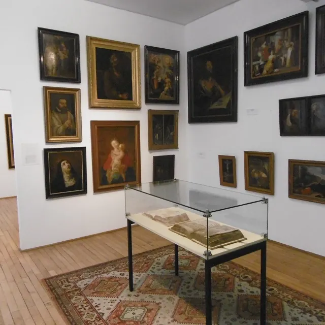
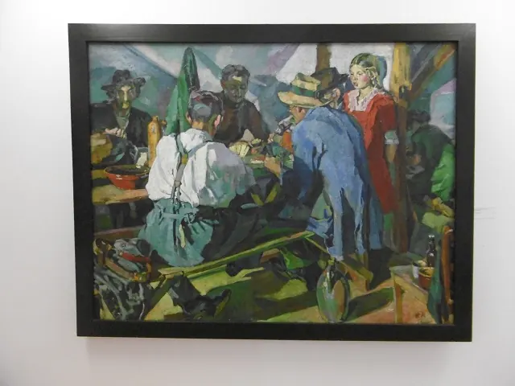
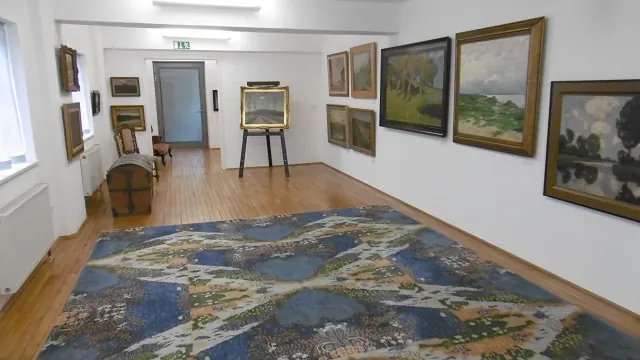
De molentoren
In de molentoren, die 500 jaar gebruikt werd als korenmolen, is nu met dank aan museum Katharinenhof een tentoonstelling te zien. Deze permanente tentoonstelling neemt je mee in de geschiedenis van de toren.
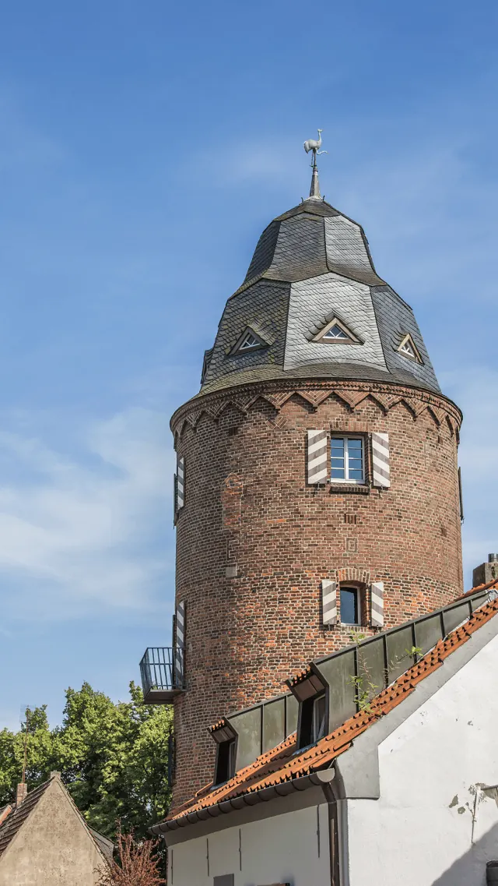
De stadsschuur
Binnen de stadsmuren waren vroeger 30 stadschuren, waarvan er één nog altijd overeind staat. Sinds 2002 is de Stadtscheune ingericht als museum. Er worden traditionele landbouwmachines tentoongesteld en je kunt een kijkje nemen bij een van de oude ambachten die worden uitgevoerd zoals: klompen en vaten maken.
Geniet van Duitse lekkernijen in Kranenburg
Wanneer je trek krijgt na het bezoeken van de bezienswaardigheden of het wandelen langs de oude stadswal, breng je een bezoek aan bakkerij Derks of strijk je neer op het terras van restaurant Cafehaus Niederrhein in het voormalige station van Kranenburg.
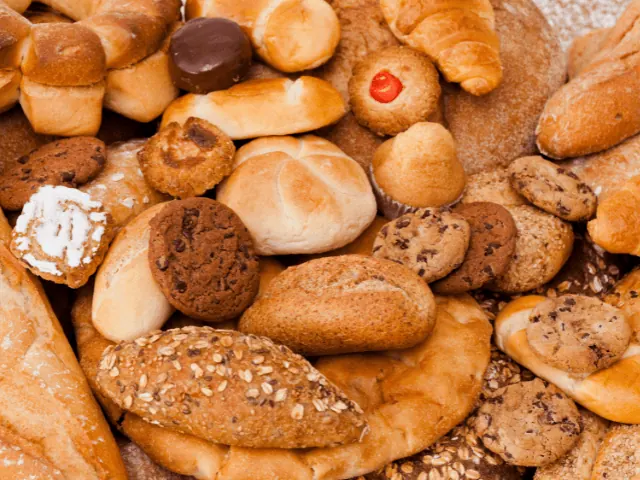
Bakkerij Derks
Bakkerij Derks ligt tegenover het marktplein in het centrum van Kranenburg. Hier kun je neerstrijken op het buitenterras voor een fairtrade koffie, een broodje van eigen zuurdesem en een van de gebakjes uit de riante collectie van de banketbakker.
De bakkerij is al sinds 1938 in handen van de familie Derks. Tot op de dag van vandaag maak je kennis met de recepten die door hun voorvaderen ontwikkeld zijn. Ouderwets genieten dus.
Restaurant Cafehaus Niederrhein
Van woensdag tot en met zondag geniet je in het voormalige station van Kranenburg van diverse regionale gerechten op het zonnige terras op binnen in het sfeervolle historische restaurant. Niet alleen kan je hier genieten van de dagelijks versbereide hapjes en gebakjes, ook hebben ze een zaal voor feesten en andere kleine en grootschalige evenementen.
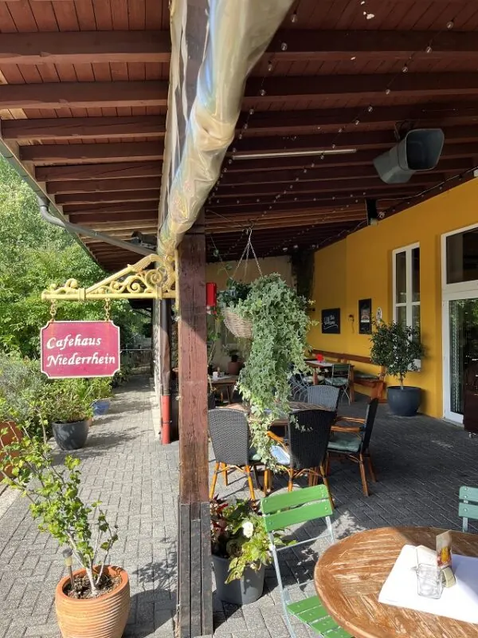
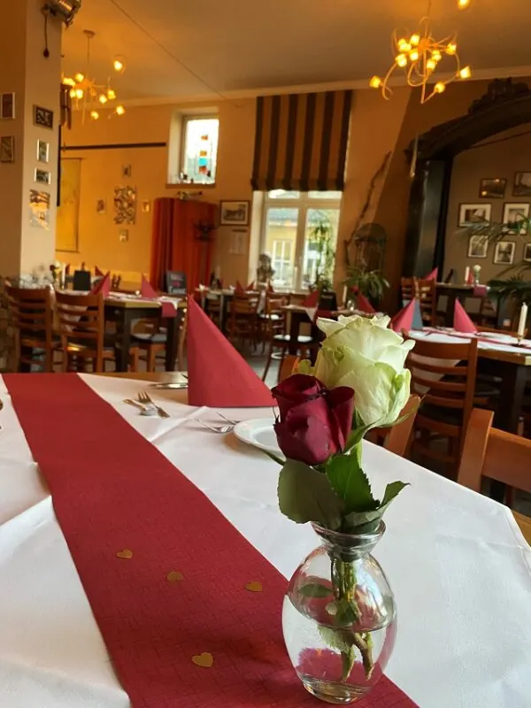
Evenementen Kranenburg
Bekijk hier de evenementen die gehouden worden in Kranenburg
Lees ook

7x een zaal huren in Nijmegen
In de bruisende stad Nijmegen is van alles te doen. Voor zowel inwoners, studenten als toeristen is het niet nodig om voor festiviteiten of…

Zin in zee of stad? 3x perfecte uitstapjes buiten Nijmegen
Soms is het heerlijk om even de stad uit te gaan en een dag of weekend iets nieuws te ontdekken. Vanuit Nijmegen ben je in no time aan zee, in een…

3x een leuke Bed and Breakfast in Wijchen
De meest opvallende oude bezienswaardigheid in Wijchen is het centraal gelegen Kasteel van Wijchen, dat voor het eerst genoemd wordt in archiefstukken uit…